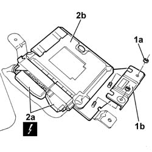

2127E10 hydraulic speed selection system control unit - r r
- Path
- Procedures > 21 GEARBOX UNIT > 2127 ELECTRO-HYDRAULIC SELECTION. GEARBOX EXTERNAL. CONTROLS > 2127E electric speed selection system > 2127E10 hydraulic speed selection system control unit - r r
- Kind
- repair procedure (removal / refitting; the operation number is the code)
- Applies to
- engines: 1.2 8v; all production periods
- Interactive page
- https://sloeber94.github.io/elrnDB-fPnd/en/#/2752687
Applies to: engines: 1.2 8v; all production periods
 Removing
Removing
 Refitting
RefittingDisconnect the battery negative terminal.
Remove the cover on the electro-hydraulic gear selection system electronic control unit.
1. Undo the fixing nuts (1a) and remove the retaining bracket (1b).
2. Disconnect electrical connections (2a) and remove control unit (2b).
 | Name | Connector |
|---|---|---|
2a | Selespeed transmission control unit | M54A |
| Name | Connector |
|---|---|---|
2a | Selespeed transmission control unit | M54B |

Applies to: engines: 1.2 8v; all production periods
Refitting
RemovingFit the electro-hydraulic gear selection system electronic control unit.
Fit the retaining bracket and fix it using the nuts.
Connect the electrical connections to the control unit.
| Name | Connector |
|---|---|---|
- | Selespeed transmission control unit | M54A |
| Name | Connector |
|---|---|---|
- | Selespeed transmission control unit | M54B |
Fit the electronic control unit cover.
Connect the battery negative terminal.